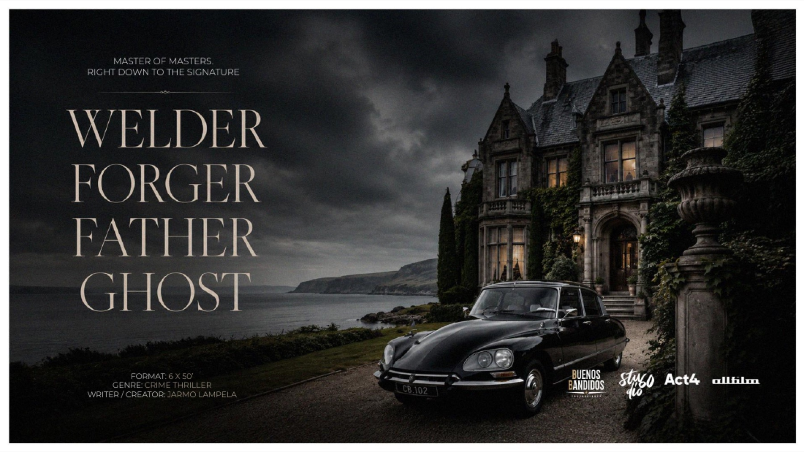
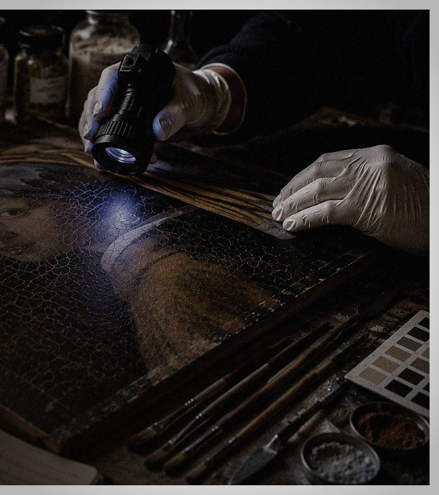

Callum Boyd — A Pittenweem welder and classic-car restorer, and one of the most skilled art forgers alive.
Isla Sinclair-Boyd — Callum’s daughter, an art conservator drawn into the investigation of her own father.
Fiona Sinclair — Callum’s ex-wife, a senior Police Scotland detective drawn into the case.
Elena Vega — The Interpol art-fraud investigator hunting the one forger who matches her own brilliance.
Hamish “Hammer” MacInnes — Callum’s oldest friend, and the only person who knows him completely.

Concept art
Crime Series · In Development
For thirty years, the world’s greatest museums have hung his forgeries and called them masterpieces. Callum Boyd — a Scottish classic-car restorer — has painted “lost” works by Vermeer, Goya, Schjerfbeck, de Lempicka, Munch, Gentileschi and Modigliani, and let the world believe them real.
When a Vermeer he painted years ago surfaces at an Amsterdam auction and is exposed as a fake, Interpol investigator Elena Vega begins pulling the thread. It leads to Edinburgh — and to the Police Scotland detective called in to help: Callum’s ex-wife. Closing in fastest of all is their daughter Isla, an art conservator who has no idea that the forger she is hunting is her own father.
As the net tightens and his body begins to fail him, a master of masters must make one last choice: confess everything, or vanish like a ghost. Welder Forger Father Ghost is a prestige crime thriller about authenticity, family and the price of genius — inspired by the real Finnish “master of masters,” the forger Veli Seppä.
6 × 50′ · Crime Thriller · English & Spanish · Scotland / Spain / Iceland / Estonia / Ireland

Concept art
Principal Characters
Pretenders don’t create. Masters do.
Credits
Created by — Jarmo Lampela
Written by — Jarmo Lampela & Tatiana Rodríguez
Director — To be announced
Visual Design — Juho Jalagin
Producers — David Troncoso (Studio 60, Spain), Hörður Rúnarsson (ACT4, Iceland), Juha Kukkonen (Buenos Bandidos, Spain), Ivo Felt (Allfilm, Estonia)
Production — Buenos Bandidos · Studio 60 · ACT4 · Allfilm
Technical
6 × 50′ · Crime Thriller
Color
English, Spanish
Scotland / Spain / Iceland / Estonia / Ireland
Status
In development.
Now seeking partners.
Development & Sales
Now seeking a UK / Ireland co-producer, a streamer, and broadcast & distribution partners.
Request the deck